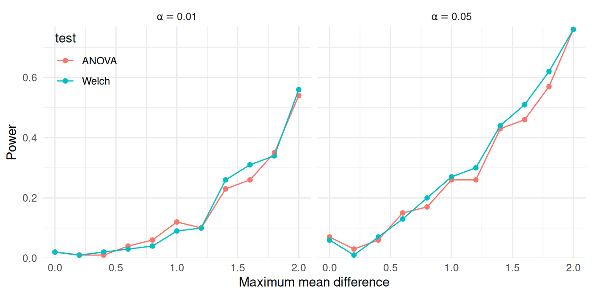

generate_ANOVA_new <- function(
G, max_diff, sigma_sq = 1, N = 20, allocation = "equal"
) {
mu <- seq(0, max_diff, length.out = G)
if (identical(allocation, "equal")) {
allocation <- rep(1 / G, times = G)
} else {
allocation <- rep(allocation, length.out = G)
allocation <- allocation / sum(allocation)
}
N_g <- round(N * allocation)
sigma <- rep(sqrt(sigma_sq), length.out = G)
group <- factor(rep(1:G, times = N_g))
mu_long <- rep(mu, times = N_g)
sigma_long <- rep(sigma, times = N_g)
x <- rnorm(N, mean = mu_long, sd = sigma_long)
sim_data <- tibble(group = group, x = x)
return(sim_data)
}10 Simulating across multiple scenarios
In Chapter 4, we described the general structure of basic simulations as following four steps: generate, analyze, repeat, and summarize, with each step represented by its own function or set of code. We also saw how to bundle these steps into a simulation driver that runs our entire simulation. With these tools, it is easy to run a simulation for a single combination of parameter values. In practice, however, we want to examine a range of different values, to see how things change as we vary the levels of our focal parameter values, auxiliary parameters, or sample size (or other design parameters). We might want to do this to gain assurance that our findings are general, and we might want to understand what aspects of the context affect the performance of the estimator or estimators we are studying. A single simulation gives us no hint as to either of these questions. It is only by looking across a range of settings that we can hope to understand trade-offs, general rules, and limits.
This brings us to the remaining piece of the simulation puzzle: the study’s experimental design. In this section of the book, we walk through three further steps for a systematic simulation: design a set of scenarios to examine, execute across multiple scenarios, and synthesize the performance results across the scenarios explored. The principles of tidy simulation apply to these steps as well.
In this chapter, we examine the “execute” step. We demonstrate how to create a dataset representing the experimental design of the simulation as a set of scenarios to run, how to execute a simulation driver across those identified scenarios, and how to organize the results for synthesis. Our focus here is on the programming techniques and computational structure. In the following chapter, we go deeper into “design,” and discuss some of the deeper theoretical challenges of designing multifactor simulations, and provide some worked case studies to bring these ideas to life. In subsequent chapters, we turn to the “synthesize” step and examine tools for making sense of the full set of results from a multifactor simulation.
For all of these steps we focus on full factorial designed experiments, a common design used in Monte Carlo simulation. In full factorials, each factor (a particular knob a researcher might turn to change the simulation conditions) is varied across multiple levels, and the design includes every possible combination of the levels of every factor. Before we dig into that, we start with a simpler case of a single-factor simulation, where we vary only one factor across multiple levels. Even this simple, single-factor design is enough to illustrate the basic principles of systematic simulation and to demonstrate core elements of the code architecture.
10.1 Simulating across levels of a single factor
Even if we are only using simulation in an ad hoc, exploratory way, we will often be interested in examining how something changes as we change some feature of interest. For example, in Chapter 3, we looked at how the coverage rate of a confidence interval for the mean of an exponential distribution changed as a function of the sample size. To explore this, we ran a simulation across a set of sample sizes ranging from 10 to 300, and we found that the coverage rate improved towards the desired level as sample size increased.
Simple forms of systematic exploration such as this are useful in many situations. For instance, when using Monte Carlo simulation for study planning, we might examine simulated power over a range of the target parameter to identify the smallest parameter that provides power above a desired level. If we are using simulation simply to study an unfamiliar model, we might vary a key parameter over a wide range to see how the performance of an estimator changes. These forms of exploration are single-factor simulations.
To demonstrate, we revisit the case study on heteroskedastic analysis of variance, as studied by Brown and Forsythe (1974) and developed in Chapter 5. Our goal is to understand how the power of Welch’s test varies as a function of the maximum distance between group means.
We do this in four steps:
- Make a function to run a single scenario
- Make a table of all the scenarios we want to run
- Run our single-scenario function for each scenario on the table.
- Analyze the results (with a plot)
10.1.1 Making a function to run a single scenario
Back in Chapter 5, before we knew much, we developed a function, generate_ANOVA_data(), to generate data for a heteroskedastic ANOVA scenario, and a function, ANOVA_Welch_F(), to analyze the resulting data. We then built our simulation and analysis by hand. Before we move on to multiple scenarios, let us clean this work up by writing a simulation driver that runs a simulation and give results as a single call.
generate_ANOVA_data() takes an arbitrary vector of means per group. Our goal is, however, to have a single “knob” that we can turn to increase the spread of groups in the generated data. To do this, we will rewrite our function to take a single value, maximum difference (max_diff). Inside our new function we will generate group means that are equally spaced between zero and this value. We will also re-parameterize the function in terms of the total sample size (N) and the fraction of observations allocated to each group (allocation) to make calling it simpler.
The revised function is
We next create an initial simulation driver by combining generate_ANOVA_new() with the data-analysis function we created in Section 5.2:
sim_ANOVA <- bundle_sim(f_generate = generate_ANOVA_new,
f_analyze = ANOVA_Welch_F)Our simulation driver does not give us final performance, however, just the raw results:
sims <- sim_ANOVA( 100, G = 4, max_diff = 1,
sigma_sq = c(1, 2, 2, 3), N = 40 )
sims# A tibble: 100 × 2
ANOVA Welch
<dbl> <dbl>
1 0.626 0.488
2 0.000540 0.00343
3 0.356 0.185
4 0.414 0.298
5 0.299 0.114
6 0.444 0.532
7 0.670 0.716
8 0.368 0.244
9 0.0298 0.0476
10 0.00358 0.0111
# ℹ 90 more rowsUsing what we learned in Chapter 9, we can calculate power as so:
calc_rejection(sims, p_values = Welch, alpha = c(.01, .05))# A tibble: 1 × 5
K_rejection rej_rate_01 rej_rate_05 rej_rate_mcse_01
<int> <dbl> <dbl> <dbl>
1 100 0.1 0.24 0.03
# ℹ 1 more variable: rej_rate_mcse_05 <dbl>We want power for both the Welch test and the conventional ANOVA \(F\) test, so we can compare them, so we write a small function to generate a table of power levels for both tests across the alpha levels we are interested in. In order to easily incorporate it into our pipeline, our function takes a set of simulation results as input and provide a dataset of performance measures as output:
summarize_power <- function(data, alpha = c(.01,.05)) {
ANOVA <- calc_rejection(data, p_values = ANOVA, alpha = alpha,
format = "long")
Welch <- calc_rejection(data, p_values = Welch, alpha = alpha,
format = "long")
bind_rows(
ANOVA = ANOVA,
Welch = Welch,
.id = "test"
)
} We get back a nice tibble of results when we use it:
summarize_power( sims )# A tibble: 4 × 5
test K_rejection alpha rej_rate rej_rate_mcse
<chr> <int> <dbl> <dbl> <dbl>
1 ANOVA 100 0.01 0.09 0.0286
2 ANOVA 100 0.05 0.25 0.0433
3 Welch 100 0.01 0.1 0.03
4 Welch 100 0.05 0.24 0.0427Our next step is to wrap all of the above into a single call. The bundle_sim() function from simhelpers will actually create such a function for us, combining a performance calculation function along with the data-generating and data-analysis functions. In particular, the bundle_sim() function will take any summarizing function that takes in a set of simulation results and gives back a table of performance measures, which is just what summarize_power() does. Witness!
sim_ANOVA <- bundle_sim(
f_generate = generate_ANOVA_new,
f_analyze = ANOVA_Welch_F,
f_summarize = summarize_power
)
sim_ANOVA( 100, G = 4, max_diff = 1,
sigma_sq = c(1, 2, 2, 3), N = 40,
alpha = c(.01, .05) )# A tibble: 4 × 5
test K_rejection alpha rej_rate rej_rate_mcse
<chr> <int> <dbl> <dbl> <dbl>
1 ANOVA 100 0.01 0.13 0.0336
2 ANOVA 100 0.05 0.21 0.0407
3 Welch 100 0.01 0.1 0.03
4 Welch 100 0.05 0.23 0.0421Now we can apply our simulation driver to several different scenarios with different values of max_diff.
10.1.2 Making a table of scenarios to run
Following the principles of tidy simulation, it is useful to represent the design of a systematic simulation as a dataset with a row for each scenario to be considered. For a single-factor simulation, the experimental design consists of a dataset with just a single variable:
Welch_design <- tibble(max_diff = seq(0, 2, 0.2))
str(Welch_design)tibble [11 × 1] (S3: tbl_df/tbl/data.frame)
$ max_diff: num [1:11] 0 0.2 0.4 0.6 0.8 1 1.2 1.4 1.6 1.8 ...For a single factor simulation, making our schedule of simulations to run is easy. This step will get more involved with multi-factor simulations, as described in Section 10.2.
10.1.3 Running the simulation across scenarios
To compute simulation results for each scenario on our list, we can use the map() function from the purrr package. map() takes a list of values as the input, then calls a function on each value. Our sim_ANOVA() function has several further arguments that need to be specified. Because these will be the same for every value of max_diff, we can include them as additional arguments in map(), and they will be used every time sim_ANOVA() is called. Here is one way to code this:
Welch_results <-
Welch_design %>%
mutate(
pvals = map(max_diff, sim_ANOVA, reps = 100,
G = 4, sigma_sq = c(1, 2, 2, 3),
N = 40)
)Another way to accomplish the same thing is to specify an anonymous function (also called a lambda) in the map() call. This syntax makes it clearer that the additional arguments are getting called in every evaluation of sim_ANOVA():
Welch_results <-
Welch_design %>%
mutate(
pvals = map(max_diff, ~ sim_ANOVA(100, max_diff = .x,
G = 4, sigma_sq = c(1, 2, 2, 3),
N = 40))
)In the resulting dataset, the pvals variable is a list, with each entry consisting of a tibble of our results:
Welch_results# A tibble: 11 × 2
max_diff pvals
<dbl> <list>
1 0 <tibble [4 × 5]>
2 0.2 <tibble [4 × 5]>
3 0.4 <tibble [4 × 5]>
4 0.6 <tibble [4 × 5]>
5 0.8 <tibble [4 × 5]>
6 1 <tibble [4 × 5]>
7 1.2 <tibble [4 × 5]>
8 1.4 <tibble [4 × 5]>
9 1.6 <tibble [4 × 5]>
10 1.8 <tibble [4 × 5]>
11 2 <tibble [4 × 5]>The above code and output may look a bit peculiar: we are storing a set of dataframes (our result) in our original dataframe as a new “variable.” This is actually ok in R: our results will be in what is called a list-column, where each element in our list column is the set of simulation results for the given scenario. For instance, if we want to examine the results from the third scenario, we can pull it out as follows:
Welch_results$pvals[[3]]# A tibble: 4 × 5
test K_rejection alpha rej_rate rej_rate_mcse
<chr> <int> <dbl> <dbl> <dbl>
1 ANOVA 100 0.01 0.01 0.00995
2 ANOVA 100 0.05 0.06 0.0237
3 Welch 100 0.01 0.02 0.014
4 Welch 100 0.05 0.07 0.0255 10.1.4 Analyzing the results
List columns are neat, but hard to work with. To turn the list-column into normal data, we can use unnest() to expand the pvals variable, replicating the values of the main variables once for each row in the nested dataset:
Welch_results_long <- unnest(Welch_results, cols = pvals)
Welch_results_long# A tibble: 44 × 6
max_diff test K_rejection alpha rej_rate rej_rate_mcse
<dbl> <chr> <int> <dbl> <dbl> <dbl>
1 0 ANOVA 100 0.01 0.02 0.014
2 0 ANOVA 100 0.05 0.07 0.0255
3 0 Welch 100 0.01 0.02 0.014
4 0 Welch 100 0.05 0.06 0.0237
5 0.2 ANOVA 100 0.01 0.01 0.00995
6 0.2 ANOVA 100 0.05 0.03 0.0171
7 0.2 Welch 100 0.01 0.01 0.00995
8 0.2 Welch 100 0.05 0.01 0.00995
9 0.4 ANOVA 100 0.01 0.01 0.00995
10 0.4 ANOVA 100 0.05 0.06 0.0237
# ℹ 34 more rowsThe final dataset has 44 rows, consisting of 4 different result rows for each of 11 scenarios. The results are also organized in a way that facilitates visualization of the power levels:
ggplot(Welch_results_long) +
aes(max_diff, rej_rate, color = test) +
geom_point() + geom_line() +
scale_y_continuous(limits = c(0, NA), expand = expansion(0,c(0,0.01))) +
facet_wrap(~ alpha, labeller = label_bquote(alpha == .(alpha))) +
labs(x = "Maximum mean difference", y = "Power") +
theme_minimal() +
theme(legend.position ="inside", legend.position.inside = c(0.08,0.85))
Under the conditions examined here, both tests appear to have similar power. Although the tests appear to work similarly here, these results are based on a very specific set of conditions, including equally sized groups and a specific configuration of within-group variances. A natural further question is whether this pattern holds under other configurations of sample allocations, total sample size, or within-group variances. These questions can be examined by expanding the simulation design to further scenarios.
10.2 Simulating across multiple factors
We just wrote a simulation to systematically explore a range of values for a single factor. We next consider systematically exploring multiple factors together.
For this example, recall our simulation study examining the performance of confidence intervals for Pearson’s correlation coefficient under a bivariate Poisson distribution. We first examined this data-generating model in Section 6.1.2, implementing it in the function r_bivariate_Poisson(). The model has three parameters (the means of each variate, \(\mu_1, \mu_2\) and the correlation \(\rho\)) and there is one design parameter (sample size, \(N\)). Thus, we could in principle examine up to four factors: \(\mu_1, \mu_2, \rho\), and \(N\).
As a first pass, we might consider the following values:
- the sample size, with values of \(N = 10, 20\), or \(30\)
- the mean of the first variate, with values of \(\mu_1 = 4, 8\), or \(12\)
- the mean of the second variate, with values of \(\mu_2 = 4, 8\), or \(12\)
- the true correlation, with values ranging from \(\rho = 0.0\) to \(0.7\) in steps of \(0.1\)
All combinations of our set of factors gives a \(3 \times 3 \times 3 \times 8\) factorial design, where each element is the number of levels for that factor. We call this design a four-factor experiment, because we have four different things we are varying.
Using these parameters directly as factors in the simulation design will lead to considerable redundancy because of the symmetry of the model: generating data with \(\mu_1 = 10\) and \(\mu_2 = 5\) would lead to identical correlations as using \(\mu_1 = 5\) and \(\mu_2 = 10\). It is useful to re-parameterize to reduce redundancy and simplify things. We will therefore restrict our simulation conditions and always have \(\mu_1\) as the larger variate. We can then reparameterize our factors, and specify the ratio of the smaller to the larger mean as \(\lambda = \mu_2 / \mu_1\). We might then examine the following factors:
- the sample size, with values of \(N = 10, 20\), or \(30\)
- the mean of the larger variate, with values of \(\mu_1 = 4, 8\), or \(12\)
- the ratio of means, with values of \(\lambda = 0.5\) or \(1.0\).
- the true correlation, with values ranging from \(\rho = 0.0\) to \(0.7\) in steps of \(0.1\)
We now have a \(3 \times 3 \times 2 \times 8\) factorial design.
To implement this design in code, we first save the simulation parameters as a list with one entry per factor, where each entry consists of the levels that we would like to explore. We will run a simulation for every possible combination of these values. Here is code that generates all of the scenarios given the above design, storing these combinations in a data frame, params, that represents the full experimental design:
design_factors <- list(
N = c(10, 20, 30),
mu1 = c(4, 8, 12),
lambda = c(0.5, 1.0),
rho = seq(0.0, 0.7, 0.1)
)
lengths(design_factors) N mu1 lambda rho
3 3 2 8 params <- expand_grid( !!!design_factors )
glimpse(params)Rows: 144
Columns: 4
$ N <dbl> 10, 10, 10, 10, 10, 10, 10, 10, 10, 10, 10, 10,…
$ mu1 <dbl> 4, 4, 4, 4, 4, 4, 4, 4, 4, 4, 4, 4, 4, 4, 4, 4,…
$ lambda <dbl> 0.5, 0.5, 0.5, 0.5, 0.5, 0.5, 0.5, 0.5, 1.0, 1.…
$ rho <dbl> 0.0, 0.1, 0.2, 0.3, 0.4, 0.5, 0.6, 0.7, 0.0, 0.…We use expand_grid() from the tidyr package to create all possible combinations of the four factors.1 We have a total of \(3 \times 3 \times 2 \times 8 = 144\) rows, each row corresponding to a simulation scenario to explore. With multifactor experiments, it is easy to end up running a lot of experiments!
10.3 Using pmap to run multifactor simulations
Once we have selected factors and levels for simulation, we now need to run the simulation code across all of our factor combinations. Conceptually, each row of our params dataset represents a single simulation scenario, and we want to run our simulation code for each of these scenarios. We would thus call our simulation function, using all the values in that row as parameters to pass to the function.
One way to call a function on each row of a dataset in this manner is by using pmap() from the purrr package. pmap(), an extension of the map() function from above, marches down a set of lists, running a function on each \(p\)-tuple of elements, taking the \(i^{th}\) element from each list for iteration \(i\), and passing them as parameters to the specified function. pmap() then returns the results of this sequence of function calls as a list of results.2 Because R’s data.frame objects are also sets of lists (where each variable is a vector, which is a simple form of list), pmap() also works seamlessly on data.frame or tibble objects.
Here is a small illustration of pmap() in action:
some_function <- function( a, b, theta, scale ) {
scale * (a + theta*(b-a))
}
args_data <- tibble( a = 1:3, b = 5:7, theta = c(0.2, 0.3, 0.7) )
purrr::pmap_dbl( args_data, .f = some_function, scale = 10 )[1] 18 32 58One important constraint of pmap() is that the variable names over which to iterate over must correspond exactly to arguments of the function to be evaluated. In the above example, args_data must have column names that correspond to the arguments of some_function. For functions with additional arguments that are not manipulated, extra parameters can be passed after the function name, just as with map() (as in the scale argument in this example). Extra arguments will be passed to each function call, and be the same for all calls.
10.3.1 Making a function to run a single scenario
We use the core idea of pmap()—call a function for each row of a dataset—to run our simulation for each row of our schedule of scenarios. Analogous to the single-factor approach, we first make a driver to run a single scenario, and then use pmap() to run this driver for each row of params. We again use bundle_sim() as we did for the single-factor simulation.
In Section 7.1, we developed a function called r_and_z() for computing confidence intervals for Pearson’s correlation using Fisher’s \(z\) transformation, and in Section 9.8.1, we wrote a function called evaluate_CIs() for evaluating confidence interval coverage and average width. We bundle r_bivariate_Poisson(), r_and_z(), and evaluate_CIs() into a simulation driver as follows:
Pearson_sim <- bundle_sim(
f_generate = r_bivariate_Poisson, f_analyze = r_and_z, f_summarize = evaluate_CIs
)
args(Pearson_sim)function (reps, N, mu1, mu2, rho = 0, seed = NA_integer_, summarize = TRUE)
NULLPearson_sim() will run a simulation for any given scenario:
Pearson_sim(1000, N = 10, mu1 = 5, mu2 = 5, rho = 0.3)# A tibble: 1 × 5
K_coverage coverage coverage_mcse width width_mcse
<int> <dbl> <dbl> <dbl> <dbl>
1 1000 0.947 0.00708 1.10 0.00557In order to call Pearson_sim() with pmap(), we need to ensure that each column of params exactly corresponds to an argument in Pearson_sim(). In particular, because we re-parameterized the model in terms of \(\lambda\), we will need to compute the parameter value for \(\mu_2\) and remove the lambda variable as it is not an argument of Pearson_sim():
params_mod <- params %>%
mutate(mu2 = mu1 * lambda) %>%
dplyr::select(-lambda)Now we can use pmap() to run the simulation for all 144 parameter settings:
sim_results <- params
sim_results$res <- pmap(params_mod, Pearson_sim, reps = 1000 )
unnest( sim_results, cols ="res" ) %>%
dplyr::select( -K_coverage, -coverage_mcse, -width_mcse )We can combine the above into a single pipeline as so:
sim_results <-
params %>%
mutate(
mu2 = mu1 * lambda,
reps = 1000
) %>%
mutate(
res = pmap(dplyr::select(., -lambda), .f = Pearson_sim)
) %>%
unnest(cols = res)As an alternative approach, the evaluate_by_row() function from the simhelpers package provides the same functionality but with a more direct syntax:
sim_results <-
params %>%
mutate( mu2 = mu1 * lambda ) %>%
evaluate_by_row( Pearson_sim, reps = 1000 )An advantage of evaluate_by_row() is that the input dataset can include extra variables (such as lambda). Another advantage is that it is easy to run the calculations in parallel; see Chapter 18.
As a final step, we save our results using tidyverse’s write_rds() (for background on this function, see R for Data Science, Section 7.5). We first ensure we have a directory by making one via dir.create() (see Section 16.4 for more on files):
dir.create( "results", showWarnings = FALSE )
write_rds( sim_results, file = "results/Pearson_Poisson_results.rds" )We now have a complete set of simulation results for all of the scenarios we specified.
10.4 When to calculate performance metrics
For a single-scenario simulation, we repeatedly generate and analyze data, and then assess the performance across the repetitions. When we extend this process to multifactor simulations, we have a choice: do we compute performance measures for each simulation scenario as we go (inside) or do we compute all of them after we get all of our individual results (outside)? There are pros and cons to each approach.
10.4.1 Aggregate as you simulate (inside)
The inside approach runs a stand-alone simulation for each scenario of interest. For each combination of factors, we simulate data, apply our estimators, assess performance, and return a table with summary performance measures. We can then stack these tables to get a dataset with all of the results, ready for analysis.
This is the approach we illustrated above. It is straightforward and streamlined: we already have a method to run simulations for a single scenario, and we just repeat it across multiple scenarios and combine the outputs. After calling pmap() (or evaluate_by_row()) and stacking the results, we end up with a dataset containing all the simulation conditions, one simulation context per row (or maybe we have sets of several rows for each simulation context, with one row for each method), with the columns consisting of the simulation factors and calculated performance measures. This table of performance measures is exactly what we need to conduct further analysis and draw conclusions about how the estimators work.
The primary advantages of the inside strategy are that it is easy to modularize the simulation code and that it produces a compact dataset of results, minimizing the number and size of files that need to be stored. On the con side, calculating summary performance measures inside of the simulation driver limits our ability to add new performance measures on the fly or to examine the distribution of individual estimates. For example, suppose we wanted to check if the distribution of Fisher-z estimates in a particular scenario was right-skewed, perhaps because we are worried that the estimator sometimes breaks down. We might want to make a histogram of the point estimates, or calculate the skew of the estimates as a performance measure. Because the individual estimates are not saved, we would have no way of investigating these questions without rerunning the simulation for that condition. In short, the inside strategy minimizes disk space but constrains our ability to explore or revise performance calculations.
10.4.2 Keep all simulation runs (outside)
The outside approach involves retaining the entire set of estimates from every replication, with each row corresponding to an estimate for a given simulated dataset. The benefit of the outside approach is that it allows us to add or change how we calculate performance measures without re-running the entire simulation. This is especially important if the simulation is time-intensive, such as when the estimators being evaluated are computationally expensive. The primary disadvantage the outside approach is that it produces large amounts of data that need to be stored and further manipulated. Thus, the outside strategy maximizes flexibility, at the cost of increased dataset size.
In our Pearson correlation simulation, we initially followed the inside strategy, but the bundle_sim() method provides a way to easily move to the outside strategy. Consider the arguments for Pearson_sim():
args(Pearson_sim)function (reps, N, mu1, mu2, rho = 0, seed = NA_integer_, summarize = TRUE)
NULLThe added summarize argument allows the user to specify whether to calculate performance for each scenario as the simulation runs, or to return the raw results for each replication. To move outside, simply set summarize to FALSE:
Pearson_sim(reps = 4, N = 15, mu1 = 5, mu2 = 5, rho = 0.5,
summarize = FALSE) r z CI_lo CI_hi
1 0.4512626 0.4862847 -0.07934109 0.7826127
2 0.4203364 0.4481005 -0.11715191 0.7673676
3 0.6901028 0.8481519 0.27508702 0.8883289
4 0.2223996 0.2261791 -0.32713251 0.6595247By not summarizing as we go, we can save the entire set of estimates, rather than just the performance summaries. This result file will have \(R\) times as many rows as the older file. In practice, these result files can grow extremely large, but disk space is cheap.
The following code runs the same experiment as in Section 10.3, but stores the individual replications:
sim_results_full <-
params %>%
mutate( mu2 = mu1 * lambda ) %>%
evaluate_by_row( Pearson_sim, reps = 1000, summarize = FALSE )
write_rds( sim_results_full,
file = "results/Pearson_Poisson_results_full.rds" )The outside method will result in many more rows of data and a much larger file. One small tweak to this workflow is to reduce the file size by keeping the results from each replication in a list-column rather than unnesting them. Here we set nest_results = TRUE in the call to evaluate_by_row():
sim_results_nested <-
params %>%
mutate( mu2 = mu1 * lambda ) %>%
evaluate_by_row( Pearson_sim, reps = 1000,
summarize = FALSE,
nest_results = TRUE )
write_rds( sim_results_nested, file = "results/Pearson_Poisson_results_nested.rds" )Here is a comparison of the three approaches:
| approach | n_rows | Kb |
|---|---|---|
| inside | 144 | 43 |
| outside | 144000 | 9000 |
| nested | 144 | 4528 |
Storing just the results takes only a few kilobytes, but the raw results take several megabytes, a big difference. If we follow the outside strategy, keeping the results nested reduces the file size by around 50%.
10.4.3 Getting the “outside” results ready for analysis
If we generate raw results using the “outside” approach, we will then need to do the performance calculations across replications within each simulation context. One way to do this is to use group_by() and summarize() to carry out the performance calculations all at once across the full unnested simulation results:
sim_results_full %>%
group_by( N, mu1, mu2, rho ) %>%
summarise(
calc_coverage(lower_bound = CI_lo, upper_bound = CI_hi, true_param = rho)
)# A tibble: 144 × 9
# Groups: N, mu1, mu2 [18]
N mu1 mu2 rho K_coverage coverage coverage_mcse
<dbl> <dbl> <dbl> <dbl> <int> <dbl> <dbl>
1 10 4 2 0 1000 0.945 0.00721
2 10 4 2 0.1 1000 0.936 0.00774
3 10 4 2 0.2 1000 0.956 0.00649
4 10 4 2 0.3 1000 0.944 0.00727
5 10 4 2 0.4 1000 0.946 0.00715
6 10 4 2 0.5 1000 0.935 0.00780
7 10 4 2 0.6 1000 0.95 0.00689
8 10 4 2 0.7 1000 0.945 0.00721
9 10 4 4 0 1000 0.946 0.00715
10 10 4 4 0.1 1000 0.944 0.00727
# ℹ 134 more rows
# ℹ 2 more variables: width <dbl>, width_mcse <dbl>If we want to use our full performance measure function evaluate_CIs() to get additional metrics such as MCSEs, we would nest our data into a series of mini-datasets (one for each simulation), and then process each element. As we saw above, nesting collapses a larger dataset into one where one of the variables consists of a list of datasets:
results <-
sim_results_full |>
group_by( N, mu1, mu2, rho ) %>%
nest( .key = "res" )
results# A tibble: 144 × 5
# Groups: N, mu1, mu2, rho [144]
N mu1 rho mu2 res
<dbl> <dbl> <dbl> <dbl> <list>
1 10 4 0 2 <tibble [1,000 × 4]>
2 10 4 0.1 2 <tibble [1,000 × 4]>
3 10 4 0.2 2 <tibble [1,000 × 4]>
4 10 4 0.3 2 <tibble [1,000 × 4]>
5 10 4 0.4 2 <tibble [1,000 × 4]>
6 10 4 0.5 2 <tibble [1,000 × 4]>
7 10 4 0.6 2 <tibble [1,000 × 4]>
8 10 4 0.7 2 <tibble [1,000 × 4]>
9 10 4 0 4 <tibble [1,000 × 4]>
10 10 4 0.1 4 <tibble [1,000 × 4]>
# ℹ 134 more rowsNote how each row of our nested data has a little tibble containing the results for that context, with 1000 rows each.3 Once nested, we can then use map2() to apply a function to each element of res:
results_summary <-
results %>%
mutate( performance = map2( res, rho, evaluate_CIs ) ) %>%
dplyr::select( -res ) %>%
unnest( cols="performance" )
results_summary# A tibble: 144 × 9
# Groups: N, mu1, mu2, rho [144]
N mu1 rho mu2 K_coverage coverage coverage_mcse
<dbl> <dbl> <dbl> <dbl> <int> <dbl> <dbl>
1 10 4 0 2 1000 0.945 0.00721
2 10 4 0.1 2 1000 0.936 0.00774
3 10 4 0.2 2 1000 0.956 0.00649
4 10 4 0.3 2 1000 0.944 0.00727
5 10 4 0.4 2 1000 0.946 0.00715
6 10 4 0.5 2 1000 0.935 0.00780
7 10 4 0.6 2 1000 0.95 0.00689
8 10 4 0.7 2 1000 0.945 0.00721
9 10 4 0 4 1000 0.946 0.00715
10 10 4 0.1 4 1000 0.944 0.00727
# ℹ 134 more rows
# ℹ 2 more variables: width <dbl>, width_mcse <dbl>We have built our final performance table after running the entire simulation, rather than running it on each simulation scenario in turn.
With the “outside” approach, it is easy to add a performance metric without having to recompute the entire simulation: simply change evaluate_CIs and recalculate. Summarizing during the simulation vs. after, as we just did, leads to the same set of results.4 Allowing yourself the flexibility to re-calculate performance measures can be very advantageous, and we tend to follow this outside strategy for any simulations involving more complex estimation procedures.
10.5 Summary
Multifactor simulations are simply a series of individual scenario simulations, where the set of scenarios are structured by systematically manipulating some of the parameters of the data-generating process. The overall workflow for implementing a multifactor simulation begins with identifying which parameters and which specific values of those parameters to explore. These parameters correspond to the factors of the simulation’s design; the specific values correspond to the levels (or settings) of each factor. Following the principles of tidy simulation, we represent these decisions as a dataset consisting of all the combinations of the factors that we wish to explore. Think of this as a menu, or checklist, of simulation scenarios to run. The next step in the workflow is then to walk down the list, running a simulation of each scenario in turn.
After executing a multifactor simulation, we will have results from every simulation scenario. These might be the raw results (estimates of quantities of interest from every individual iteration of the simulation) or summary results (performance measures calculated across iterations of the simulation for a given scenario). In either form, the results will be connected to the parameter values (the factor levels) use to generate them. Stacking all the results up will produce a single dataset, suitable for further analysis.
With the workflow that we have demonstrated, it is easy to specify multifactor simulations that involve hundreds or even thousands of distinct scenarios. The amount of data generated by such simulations can quickly grow overwhelming, and making sense of the results will require further, careful analysis. In the next several chapters, we will examine several strategies for exploring and presenting results from multifactor simulations.
Exercises
Exercise 10.1 (Extending Brown and Forsythe) Brown and Forsythe (1974) evaluated the power of the ANOVA \(F\) and Welch test under twenty different conditions, varying in the number of groups, sample sizes, and degree of heteroskedasticity (see Table 5.1).
Extend their work by building a multifactor simulation design to compare the power of the tests when \(G = 4\), for three or more different sample sizes and for settings with either unbalanced group allocations (e.g.,
allocation = c(0.1, 0.2, 0.3, 0.4)) or equal group sizes.Execute the multifactor simulations using
pmap()orevaluate_by_row().Create a graph or graphs that depict the power levels of each test as a function of
mu_max, sample size, and group allocations. How do the power levels of the tests compare to each other overall?
Exercise 10.2 (Comparing the trimmed mean, median and mean) In this extended exercise, you will develop a multifactor simulation to compare several different estimators of a common parameter under a range of scenarios. The specific tasks in this process illustrate how we would approach programming a methodological simulation to compare different estimation strategies, as you might see in the “simulation” section of an article in a statistics journal. In this example, though, both the data-generating process and the estimation strategies are very simple and quick to calculate, so that it is feasible to quickly execute a multifactor simulation. Following tidy simulation principles, the steps described below will walk you through the steps of building and testing functions for each component of the simulation, assembling them into a simulation driver, specifying a simulation design, and executing a multifactor simulation.
The aim of this simulation is to investigate the performance of the mean, trimmed mean, and median as estimators of the center of a symmetric distribution (such that the mean and median parameters are identical).
As the data-generation function, use a scaled \(t\)-distribution so that the standard deviation will always be 1 but will have different fatness of tails (high chance of outliers):
gen_scaled_t <- function( n, mu, df0 ) {
mu + rt( n, df=df0 ) / sqrt( df0 / (df0-2) )
}The variance of a \(t\) distribution is \(df/(df-2)\), so when we divide our observations by the square root of this, we standardize them so they have unit variance. The estimand of interest here is mu, the center of the distribution. The estimation methods of interest are the conventional (arithemetic) mean, a 10% trimmed mean, and the median of a sample of \(n\) observations. For performance measures, focus on bias, true standard error, and root mean squared error.
Verify that
gen_scaled_t()produces data with meanmuand standard deviation 1 for variousdf0values.Write a function to calculate the mean, trimmed mean, and median of a vector of data. The trimmed mean should trim 10% of the data from each end. The method should return a data frame with the three estimates, one row per estimator.
Verify your estimation method works by analyzing a dataset generated with
gen_scaled_t(). For example, you can generate a dataset of size 100 withgen_scaled_t(100, 0, 3)and then analyze it.Use
bundle_sim()to create a simulation function that generates data and then analyzes it. The function should takenanddf0as arguments, and return the estimates from your analysis method. Useidto give each simulation run an ID.Run your simulation function for 1000 datasets of size 10, with
mu=0anddf0=5. Store the results in a variable calledraw_exps.Write a function to calculate the RMSE, bias, and standard error for your three estimators, given the results.
Make a single function that takes
df0andn, and runs a simulation and returns the performances of your three methods.Now make a grid of \(n = 10, 50, 250, 1250\) and \(df_0 = 3, 5, 15, 30\), and generate results for your multifactor simulation.
Make a plot showing how SE changes as a function of sample size for each estimator. Do the three estimator seem to follow the same pattern? Or do they work differently?
Exercise 10.3 (Estimating latent correlations) Exercise 6.6 introduced a bivariate negative binomial model and asked you to write a data-generating function that implements the model. Exercise 9.3 provided an estimation function (called three_corrs) that calculates three different types of correlation coefficients, and asked you to write a function for calculating the bias and RMSE of these measures.
Combine your data-generating function,
three_corrs(), and your performance calculation into a simulation driver.Propose a multifactor simulation design to examine the bias and RMSE of these three correlations. Write code to create a parameter grid for your proposed simulations.
Execute the simulations for your proposed design.
Create a graph or graphs that depict the bias and RMSE of each correlation as a function of \(\rho\) and any other key parameters.
Exercise 10.4 (Examine a multifactor simulation design) Find a published article that reports a multifactor simulation study examining a methodological question.5 Write code to create a parameter grid for the scenarios examined in the study. Write a few sentences explaining the overall design of the simulation study. Summarize any justification that the authors provided for the choice of parameter values examined.
expand_grid()is set up to take one argument per factor of the design. A clearer example of its natural syntax is:params <- expand_grid( N = c(10, 20, 30), mu1 = c(4, 8, 12), lambda = c(0.5, 1.0), rho = seq(0.0, 0.7, 0.1) )However, we generally find it useful to create a list of design factors before creating the full grid of parameter values, so we prefer to make
design_factorsfirst. To useexpand_grid()on a list, we need to use!!!, the splice operator from therlangpackage, which treatsdesign_factorsas a set of arguments to be passed toexpand_grid. The syntax does look a bit wacky, but it is succinct and useful.↩︎Just like
map()ormap2(),pmap()has variants such as_dblor_dfr. These variants automatically stack or convert the list of things returned into a tidier collection (for_dblit will convert to a vector of numbers, for_dfrit will stack the results to make a large tibble, assuming each returned item is a little tibble).↩︎Alternately, we could store the results in nested form (as in
sim_results_nested), so that thegroup_by()andnest()steps are unnecessary.↩︎In fact, if we use the same seed, we should obtain exactly the same results.↩︎
Some journals that regularly publish methodological simulation studies include Psychological Methods, Psychometrika, Journal of Educational and Behavioral Statistics, Multivariate Behavioral Research, Behavior Research Methods, Research Synthesis Methods, and Statistics in Medicine.↩︎